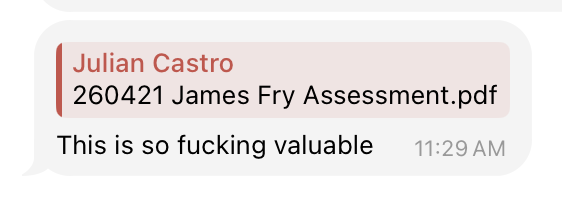
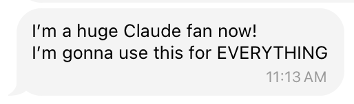

For professionals and small teams who know there is room to work better.
This is designed for people who are hearing a lot about AI, but need help translating it into specific improvements inside their own business or workflow.
You are spending too much time on repetitive work.
Manual follow-up, admin, content, research, documentation, and internal handoffs are slowing down higher-value work.
Your tools are scattered and disconnected.
You have useful software already, but the systems around it are fragmented, underused, or harder than they should be.
You want a practical plan, not vague AI advice.
You need clear recommendations based on your actual business instead of generic prompts, trends, or platform hype.
You want to move faster without creating more chaos.
The right AI setup should make your work cleaner and more efficient, not more complicated.
A focused assessment with a written report you can actually use.
The assessment is meant to uncover where the biggest opportunities are, identify what is getting in the way, and turn that into a practical report with prioritized next steps.
- 45-minute AI Opportunity Assessment A working session over Zoom to understand your workflow, bottlenecks, team habits, and the outcomes you are trying to create.
- Executive summary of pain, outcome, and opportunity You get a clear summary of what is creating friction now, what the best improvements look like, and where the highest-value opportunities are.
- Prioritized tool recommendations and quick wins You receive specific recommendations on which tools, systems, or automations make sense, plus which quick wins to tackle first.
- Implementation plan and impact framing The final report can include an impact-effort view, a short action plan, and practical estimates around time saved, cost, and potential ROI.
- Next-phase roadmap You leave knowing what to implement now, what can wait until later, and where deeper automation or custom systems may be worth pursuing.
If you want help implementing, I can support that too.
For some clients, the report is enough to execute internally. For others, it becomes the starting point for a deeper engagement where I help implement the quick wins and build the next layer.
A builder with both operational and creative instincts.
My background is a mix of engineering, business, project management, creative services, and hands-on systems thinking. I tend to see both the bottleneck and the practical path forward.
Before starting Joule Studios in 2017, I studied mechanical engineering and business and worked at BP in project management. Since then, I have worked with businesses across legal, dental, real estate, fitness, apparel, and personal brands, helping with content, branding, websites, and the systems that support growth.
More recently, I have been using AI directly in my own businesses to build websites, connect email and CRM systems, organize data, create content workflows, and ship custom software and internal tools. I also help other operators learn how to use modern coding agents like Claude Code and Codex to work faster and build smarter.
Operator mindset
Engineering and project-management roots with a strong instinct for identifying inefficiency at the source.
Creative execution
Years of client work through Joule Studios across marketing, content, branding, and digital presence.
Hands-on AI builder
Uses AI to improve real business systems, launch apps, and create custom workflow solutions in practice.
What people say after they go through the work.
These are real screenshots from people after an assessment, implementation session, or AI workflow support. I wanted the proof on this page to feel direct and unpolished in the best way.





Start with a clear assessment of where AI can help.
If you want a practical outside perspective on how AI could improve your workflow, save time, or support your team, email me to book an AI Opportunity Assessment and receive a written report with recommended tools, quick wins, and next steps.